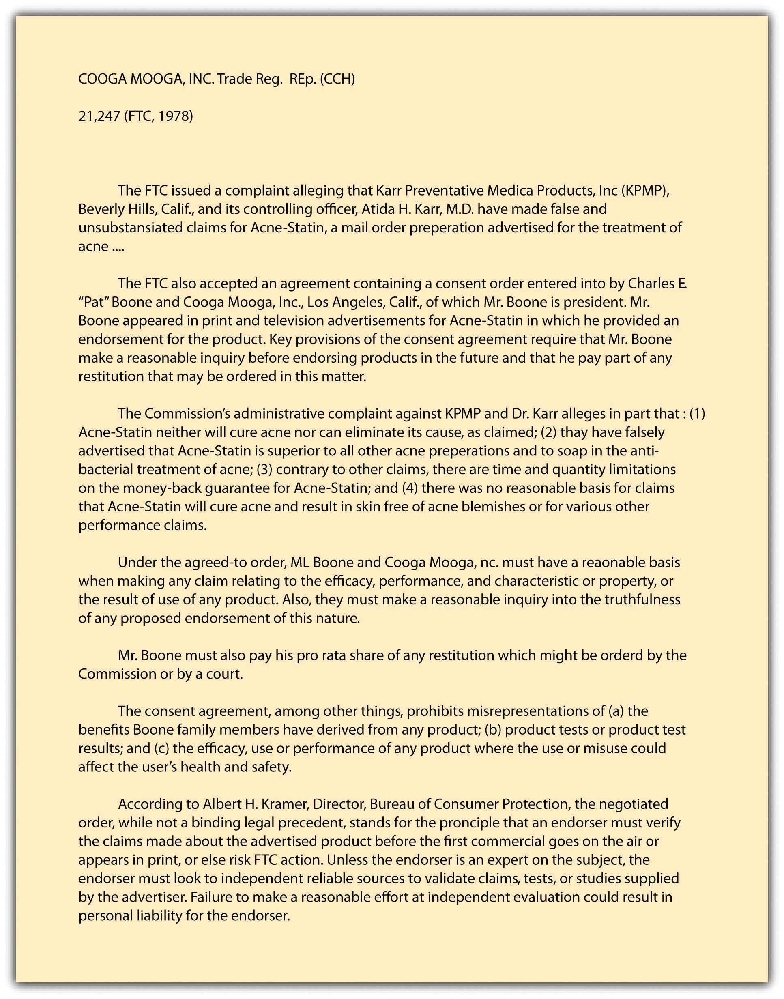

After reading this chapter, you should understand the following:
Common law prohibited a variety of trade practices unfair either to competitors or to consumers. These included passing off one’s products as though they were made by someone else, using a trade name confusingly similar to that of another, stealing trade secrets, and various forms of misrepresentation. In the Federal Trade Commission Act of 1912, Congress for the first time empowered a federal agency to investigate and deter acts of unfair competition.
Section 5 of the act gave the Federal Trade Commission (FTC) power to enforce a law that said “unfair methods of competition in commerce are hereby declared unlawful.” By “unfair methods of competition,” Congress originally intended acts that constituted violations of the Sherman and Clayton Antitrust Acts. But from the beginning, the commissioners of the FTC took a broader view of their mandate. Specifically, they were concerned about the problem of false and deceptive advertising and promotional schemes. But the original Section 5 was confining; it seemed to authorize FTC action only when the deceptive advertising injured a competitor of the company. In 1931, the Supreme Court ruled that this was indeed the case: an advertisement that deceived the public was not within the FTC’s jurisdiction unless a competitor was injured by the misrepresentation also. Congress responded in 1938 with the Wheeler-Lea Amendments to the FTC Act. To the words “unfair methods of competition” were added these words: “unfair or deceptive acts or practices in commerce.” Now it became clear that the FTC had a broader role to play than as a second agency enforcing the antitrust laws. Henceforth, the FTC would be the guardian also of consumers.
Deceptive practices that the FTC has prosecuted are also amenable to suit at common law. A tire manufacturer who advertises that his “special tire” is “new” when it is actually a retread has committed a common-law misrepresentation, and the buyer could sue for rescission of the contract or for damages. But having a few buyers sue for misrepresentation does not stop the determined fraudster. Moreover, such lawsuits are expensive to bring, and the amount of damages awarded is usually small; thus law actions alone cannot adequately address deliberately fraudulent practices.
Through Section 5, however, the FTC can seek far-reaching remedies against the sham and the phony; it is not limited to proving damages to individual customers case by case. The FTC can issue cease and desist orders and has other sanctions to wield as well. So do its counterpart agencies at the state level.
As an administrative agency, the FTC has broader powers than those vested in the ordinary prosecutorial authority, such as the Department of Justice. It can initiate administrative proceedings in accordance with the Administrative Procedure Act to enforce the several statutes that it administers. In addition to issuing cease and desist orders and getting them enforced in court, the FTC can seek temporary and permanent injunctions, fines, and monetary damages and promulgate trade regulation rulesMade by the FTC, these rules have the same force and effect as a federal statute. Each rule must pass through a long process, including publication of the proposed rule in the Federal Register, hearings or written comments, and final publication in the Code of Federal Regulations. (TRRs). Although the FTC’s authority to issue TRRs had long been assumed (and was approved by the US court of appeals in Washington in 1973), Congress formalized it in 1975 in the FTC Improvement Act (part of the Magnuson-Moss Warranty Act), which gives the FTC explicit authority to prescribe rules defining unfair or deceptive acts or practices.
A TRR is like a statute. It is a detailed statement of procedures and substantive dos and don’ts. Before promulgating a TRR, the commission must publish its intention to do so in the Federal Register and must hold open hearings on its proposals. Draft versions of a TRR must be published to allow the public to comment. Once issued, the final version is published as part of the Code of Federal Regulations and becomes a permanent part of the law unless modified or repealed by the FTC itself or by Congress—or overturned by a court on grounds of arbitrariness, lack of procedural regularity, or the like. A violation of a TRR is treated exactly like a violation of a federal statute. Once the FTC proves that a defendant violated a TRR, no further proof is necessary that the defendant’s act was unfair or deceptive. Examples of TRRs include the Retail Food Store Advertising and Marketing Practices Rule, Games of Chance in the Food Retailing and Gasoline Industries Rule, Care Labeling of Textile Wearing Apparel Rule, Mail Order Merchandise Rule, Cooling-Off Period for Door-to-Door Sales Rule, and Use of Negative Option Plans by Sellers in Commerce.
With a staff of some sixteen hundred and ten regional offices, the FTC is, at least from time to time, an active regulatory agency. The FTC’s enforcement vigor waxes and wanes with the economic climate. Critics have often charged that what the FTC chooses to investigate defies common sense because so many of the cases seem to involve trivial, or at least relatively unimportant, offenses: Does the nation really need a federal agency to guard us against pronouncements by singer Pat Boone on the efficacy of acne medication or to ensure the authenticity of certain crafts sold to tourists in Alaska as “native”? One answer is that through such cases, important principles of law are declared and ratified.
To be sure, most readers of this book, unlikely to be gulled by false claims, may see a certain Alice-in-Wonderland quality to FTC enforcement. But the first principle of FTC action is that it gauges deceptive acts and practices as interpreted by the general public, not by the more sophisticated. As a US court of appeals once said, the FTC Act was not “made for the protection of experts, but for the public—that vast multitude which includes the ignorant, the unthinking, and the credulous.” The deceptive statement or act need not actually deceive. Before 1983, it was sufficient that the statement had a “capacity to deceive.” According to a standard adopted in 1983, however, the FTC will take action against deceptive advertising “if there is a representation, omission or practice that is likely to mislead the consumer acting reasonably in the circumstances, to the consumer’s detriment.” Critics of the new standard have charged that it will be harder to prove deception because an advertisement must be “likely to mislead” rather than merely have a “capacity to deceive.” The FTC might also be put to the burden of showing that consumers reasonably interpreted the ad and that they relied on the ad. Whether the standard will reduce the volume of FTC actions against deceptive advertising remains to be seen.
The FTC also has the authority to proceed against “unfair…acts or practices.” These need not be deceptive but, instead, of such a character that they offend a common sense of propriety or justice or of an honest way of comporting oneself. See Figure 27.1 "Unfair and Deceptive Practices Laws" for a diagram of the unfair and deceptive practices discussed in this chapter.
Figure 27.1 Unfair and Deceptive Practices Laws

Although common law still serves to prohibit certain kinds of trade practices, the FTC has far more extensive powers to police unfair and deceptive trade practices. The FTC’s rules, once passed through the processes defined in the Administrative Procedure Act, have the same authority as a federal statute. Trade regulation rules issued by the FTC, if violated, can trigger injunctions, fines, and other remedial actions.
Businesses are under no general obligation to disclose everything. Advertisers may put a bright face on their products as long as they do not make a direct material misrepresentation or misstatement. But under certain circumstances, a business may be required to disclose more than it did in order not to be involved in unfair or deceptive acts and practices. For example, failure to state the cost of a service might constitute deception. Thus a federal court has ruled that it is deceptive for a telephone service to fail to disclose that it cost fifteen dollars per call for customers dialing a special 900 number listed in newspaper advertisements offering jobs.FTC v. Transworld Courier Services, Inc., 59 A&TR Rpt. 174 (N.D. Ga. 1990). Likewise, if a fact not disclosed might have a material bearing on a consumer’s decision whether to purchase the product, its omission might be tantamount to deception, as J. B. Williams Co. v. FTC (see Section 27.5.1 "False and Misleading Representations"), suggests.
Although certain words are considered mere puffery (greatest, best), other words, which have more precise connotations, can cause trouble if they are misused. One example is the word new. In most cases, the Federal Trade Commission (FTC) has held that if a product is more than six months old, it is not new and may not lawfully be advertised as such.
The efficacy of products is perhaps their most often advertised aspect. An ad stating that a product will do more than it can is almost always deceptive if the claim is specific. Common examples that the FTC continues to do battle over are claims that a cream, pill, or other substance will “rejuvenate” the body, “cure” baldness, “permanently remove” wrinkles, or “restore” the vitality of hair.
The composition of goods is another common category of deceptive claims. For example, a product advertised as “wool” had better be 100 percent wool; a mixture of wool and synthetic fabrics cannot be advertised as wool. The FTC has lists of dozens of descriptive words with appropriate definitions.
Labeling of certain products is strictly regulated by specific statutes. Under the Food, Drug, and Cosmetic Act, artificial colors and flavors must be disclosed. Other specific federal statutes include the Wool Products Labeling Act, the Textile Fiber Products Identification Act, the Fur Products Labeling Act, and the Flammable Fabrics Act; these acts are enforced by the FTC. In 1966, Congress enacted the Fair Packaging and Labeling Act. It governs most consumer products and gives the FTC authority to issue regulations for proper labeling of most of them. In particular, the statute is designed to help standardize quantity descriptions (“small,” “medium,” and “large”) and enable shoppers to compare the value of competing goods in the stores.
“Buy one, get another for half price.” “Suggested retail price: $25. Our price: $5.95.” “Yours for only $95. You save $50.” Claims such as these assault the eye and ear daily. Unless these ads are strictly true, they are violations of Section 5 of the FTC Act. To regulate deceptive price and savings claims, the FTC has issued a series of Guides against Deceptive Pricing that set forth certain principles by which the commission will judge the merits of price claims. These guides are not themselves law, but they are important clues to how the FTC will act when faced with a price claim case and they may even provide guidance to state courts hearing claims of deceptive pricing ads.
In general, the guides deal with five claims, as follows:
A common sales pitch in retail is the bait and switchA sales pitch where the retailer “baits” the prospective customer by dangling a very attractive offer, which disappears or is disparaged once the customer arrives in the store.. The retailer “baits” the prospective customer by dangling an alluring offer, but the offer either disappears or is disparaged once the customer arrives. Suppose someone sees this advertisement: “Steinway Grand Piano—only $1,000.” But when the customer arrives at the store, he finds that the advertised product has “sold out.” The retailer then tries to sell the disappointed customer a higher priced product. Or the salesperson may have the product, but she will disparage it—pointing out that it does not really live up to the advertised expectations—and will exhort the customer to buy the “better,” more expensive model. These and related tactics are all violations of Section 5 of the FTC Act. In its Guides Against Bait Advertising, the FTC lists several such unfair practices, including the following: (1) refusing to demonstrate the advertised product, (2) disparaging the product (e.g., by exhibiting a visibly inferior grade of product next to higher-priced merchandise), (3) failing to stock enough of the advertised product to meet anticipated demand (although the advertiser may say “supplies limited,” if that is the case), (4) stating that delivery of the advertised product will take an inordinate amount of time, (5) demonstrating a defective product, and (6) deliberately discouraging the would-be buyer from purchasing the advertised product.
Careless advertisers will discover that free, perhaps the most powerful word in advertising, comes at a cost. As just noted, a product is not free if it is conditional on buying another product and the price of the “free” product is included in the purchased product (“Buy one tube and get another tube free”). Just how far the commission is prepared to take this rule is clear from F.T.C. v. Mary Carter Paint Co.F.T.C. v. Mary Carter Paint Co., 382 U.S. 46 (1965). In that case, the company offered, from the time it began business, to sell on a two-for-one basis: “every second can FREE, gallon or quart.” The problem was that it had never priced and sold single cans of paint, so the FTC assumed that the price of the second can was included in the first, even though Mary Carter claimed it had established single-can prices that were comparable to those for paint of comparable quality sold by competing manufacturers. The Supreme Court sustained the commission’s finding of deception.
Product disparagementSaying defamatory things about a competitor’s product. It is a tort of defamation under common law but is actionable under Section 5 of the FTC Act where any specific untrue statement is made about a competitor’s product.—saying defamatory things about a competitor’s product—is a common-law tort, actionable under state law. It is also actionable under Section 5 of the FTC Act. The FTC brands as disparagement the making of specific untrue statements about a competitor’s product. The agency labels an indirect form of disparagement “comparative misrepresentation”—making false claims of superiority of one’s own product. Again, the common-law puffing rule would permit the manufacturer of an over-the-counter pain reliever to make the general statement “Our pill is the best.” But the claim that a pill “works three times as fast as the leading competitor’s” violates Section 5 if untrue.
Truth has always been a defense to claims of product disparagement, but even that common-law rule has been eroded in recent years with the application of the significance doctrine. A statement may be technically true but insignificant and made in such a way as to be misleading. For example, P. Lorillard Co. v. Federal Trade Commission (Section 27.5.2 "Product Comparisons") concerned a comparative study published in Reader’s Digest of tar and nicotine in cigarettes. The article suggested that the differences were inconsequential to health, but the company making the cigarette with the smallest amount of tar and nicotine touted the fact anyway.
During the 1970s, to help enforce its rules against comparative misrepresentations, the FTC began to insist that advertisers fully document any quantitative claims that their products were superior to others. This meant that the advertiser should have proof of accuracy not only if the commission comes calling; the advertiser should collect the information beforehand. If it does not, the claim will be held presumptively deceptive.
The FTC Act and state laws against misleading advertising are not the only statutes aimed at product comparisons. One important more recent federal law is the Trademark Law Revision Act of 1988, amending the original Lanham Act that protects trademarks as intellectual property (see Chapter 30 "Intellectual Property"). For many years, the federal courts had ruled that a provision in the Lanham Act prohibiting false statements in advertisements was limited to an advertiser’s false statements about its own goods or services only. The 1988 amendments overturned that line of court cases, broadening the rule to cover false statements about someone else’s goods or services as well. The amendments also prohibit false or misleading claims about another company’s commercial activities, such as the nature of its warranties. The revised Lanham Act now permits a company injured by a competitor’s false advertising to sue directly in federal court.
How wonderful to have a superstar (or maybe yesterday’s superstar) appear on television drooling over your product. Presumably, millions of people would buy a throat spray if Lady Gaga swore by it, or a pair of jeans if Justin Bieber wore them, or a face cream if Paris Hilton blessed it. In more subtle ways, numerous products are touted every day with one form of testimonial or another: “Three out of four doctors recommend…” or “Drivers across the country use.…” In this area, there are endless opportunities for deception.
It is not a deception for a well-known personality to endorse a product without disclosing that she is being paid to do so. But the person giving the testimonial must in fact use the product; if she does not, the endorsement is deceptive. Suppose an astronaut just returned to Earth is talked into endorsing suspenders (“They keep your pants from floating away”) that he was seen to be wearing on televised shots of the orbital mission. If he has customarily worn them, he may properly endorse them. But if he stops wearing them for another brand or because he has decided to go back to wearing belts, reruns of the TV commercials must be pulled from the air.
Figure 27.2
Consent Decree: Pat Boone and Cooga Mooga, Inc.
That a particular consumer is in fact ecstatic about a product does not save a false statement: it is deceptive to present this glowing testimonial to the public if there are no facts to back up the customer’s claim. The assertion “I was cured by apricot pits” to market a cancer remedy would not pass FTC muster. Nor may an endorser give a testimonial involving subjects known only to experts if the endorser is not himself that kind of expert, as shown in the consent decree negotiated by the FTC with singer Pat Boone (Figure 27.2).
Pictorial representations create special problems because the picture can belie the caption or the announcer’s words. A picture showing an expensive car may be deceptive if the dealer does not stock those cars or if the only readily available cars are different models. The ways of deceiving by creating false inferences through pictures are limited only by imagination. White-coated “doctors,” seals of the British monarchy, and plush offices can connote various things about a product, even if the advertisement never says that the man in the white coat is a doctor, that the product is related to the British crown, or that the company has its operations in the building depicted.
Television demonstrations may also suggest nonexistent properties or qualities in a product. In one case, the commission ordered the manufacturer of a liquid cleaner to cease showing it in use near hot stoves and candles, implying falsely that it was nonflammable. A commercial showing a knife cutting through nails is deceptive if the nails were precut and different knives were used for the before and after shots.
A variety of fairly common acts and practices have been held by the FTC to be deceptive (and illegal). These include the failure to disclose pertinent facts, misleading price and savings claims, bait and switch advertisements, careless use of the word “free,” and comparative misrepresentation—making misleading comparisons between your product and the product of another company.
We turn now to certain practices that not only have deceptive elements but also operate unfairly in ways beyond mere deception. In general, three types of unfair practices will be challenged: (1) failing to substantiate material representations in advertisements before publishing them or putting them on the air, (2) failing to disclose certain material information necessary for consumers to make rational comparisons of price and quality of products, and (3) taking unconscionable advantage of certain consumers or exploiting their weakness. The Federal Trade Commission (FTC) has enjoined many ads of the first type. The second type of unfairness has led the commission to issue a number of trade regulation rules (TRRs) setting forth what must be disclosed—for example, octane ratings of gasoline. In this section, we focus briefly on the third type.
In 1971, the FTC obtained a consent order from Reader’s Digest barring it from promoting a mail-order sweepstakes—a sweepstakes in which those responding had a chance to win large monetary or other prizes by returning numbered tickets—unless the magazine expressly disclosed how many prizes would be awarded and unless all such prizes were in fact awarded. Reader’s Digest had heavily promoted the size and number of prizes, but few of the winning tickets were ever returned, and consequently few of the prizes were ever actually awarded.Reader’s Digest Assoc., 79 F.T.C. 599 (1971).
Beginning in the 1960s, the retail food and gasoline industries began to heavily promote games of chance. Investigations by the FTC and a US House of Representatives small business subcommittee showed that the games were rigged: winners were “picked” early by planting the winning cards early on in the distribution, winning cards were sent to geographic areas most in need of the promotional benefits of announcing winners, not all prizes were awarded before many games terminated, and local retailers could spot winning cards and cash them in or give them to favored customers. As a result of these investigations, the FTC in 1969 issued its Trade Regulation Rule for Games of Chance in the Food Retailing and Gasoline Industries, strictly regulating how the games may operate and be promoted.
Many marketers use contests, as opposed to sweepstakes, in merchandising their products. In a contest, the consumer must actually do something other than return a ticket, such as fill in a bingo card or come up with certain words. It is an unfair practice for the sponsoring company not to abide by its own rules in determining winners.
In 1974, the FTC promulgated a TRR requiring a three-day cooling-off period within which any door-to-door sales contract can be cancelled. The contract must state the buyer’s right to the cooling-off period.
For many years, certain unscrupulous distributors would mail unsolicited merchandise to consumers and demand payment through a series of dunning letters and bills. In 1970, Congress enacted legislation that declares any unsolicited mailing and subsequent dunning to be an unfair trade practice under Section 5 of the FTC Act. Under this law, if you receive an unsolicited product in the mail, you may treat it as a gift and use it; you are under no obligation to return it or pay for it.
Another regulation of mail-order sales is the FTC’s TRR concerning mail-order merchandise. Any direct-mail merchandiser must deliver the promised goods within thirty days or give the consumer an option to accept delayed delivery or a prompt refund of his money or cancellation of the order if it has not been prepaid.
The “negative option” was devised in the 1920s by the Book-of-the-Month Club. It is a marketing device through which the consumer responds to the seller only if she wishes not to receive the product. As used by book clubs and other distributors of goods that are sent out periodically, the customer agrees, when “joining,” to accept and pay for all items unless she specifically indicates, before they arrive, that she wishes to reject them. If she does nothing, she must pay. Difficulties arise when the negative-option notice arrives late in the mail or when a member quits and continues to receive the monthly notices. Internet users will recognize the negative option in current use as the “opt out” process, where you are “in” unless you notice what’s going on and specifically opt out.
In 1974, the FTC issued a TRR governing use of negative-option plans by sellers. The TRR laid down specific notice requirements. Among other things, a subscriber is entitled to ten days in which to notify sellers that she has rejected the particular item about to be sent. If a customer has cancelled hers membership, the seller must take back and pay the former member’s mailing expenses for any merchandise mailed after cancellation. The former member may treat any shipments beyond one after cancellation as unsolicited merchandise and keep it without having to pay for it or return it.
Under certain circumstances, a company’s willful breach of contract can constitute an unfair trade practice, thus violating section 5 of the FTC Act. In one recent case, a termite and pest exterminating company signed contracts with its customers guaranteeing “lifetime” protection against termite damage to structures that the company treated. The contract required a customer to renew the service each year by paying an unchanging annual fee. Five years after signing these contracts, the company notified 207,000 customers that it was increasing the annual fee because of inflation. The FTC challenged the fee hike on the ground that it was a breach of contract amounting to an unfair trade practice. The FTC’s charges were sustained on appeal. The eleventh circuit approved the FTC’s three-part test for determining unfairness: (1) the injury “must be substantial,” (2) “it must not be outweighed by countervailing benefits to consumers,” and (3) “it must be an injury that consumers themselves could not reasonably have avoided.” In the termite case, all three parts were met: consumers were forced to pay substantially higher fees, they received no extra benefits, and they could not have anticipated or prevented the price hike, since the contract specifically precluded them.Orkin Exterminating Co. v. FTC, 849 F.2d 1354 (11th Cir. 1988), cert. denied, 488 U.S. 1041 (1989).
Market efficiency is premised on buyers being able to make rational choices about their purchases. Where sellers fail to substantiate material representations or to disclose material information that is necessary for buyers to act rationally, the FTC may find an unfair trade practice. In addition, some sellers will take “unconscionable advantage” of certain buyers or exploit their weakness. This takes place in various contests and sweepstakes, door-to-door and mail-order selling, and negative-option plans. The FTC has issued a number of TRRs to combat some of these unfair practices.
The Federal Trade Commission (FTC) has a host of weapons in its remedial arsenal. It may issue cease and desist orders against unfair and deceptive acts and practices and let the punishment fit the crime. For instance, the FTC can order a company to remove or modify a deceptive trade name. It may order companies to substantiate their advertising. Or if a company fails to disclose facts about a product, the commission may order the company to affirmatively disclose the facts in future advertising. In the J. B.Williams case (Section 27.5.2 "Product Comparisons"), the court upheld the commission’s order that the company tell consumers in future advertising that the condition Geritol is supposed to treat—iron-poor blood—is only rarely the cause of symptoms of tiredness that Geritol would help cure.
The FTC has often exercised its power to order affirmative disclosures during the past decade, but its power to correct advertising deceptions is even broader. In Warner Lambert Co. v. Federal Trade Commission, the US court of appeals in Washington, using corrective advertisingA rarely used power of the FTC to require a company to correct previously misleading advertising. It does so by requiring the company to pay for further advertising that admits to the deception and makes corrected statements that are not misleading., approved the commission’s power to order a company to correct in future advertisements its former misleading and deceptive statements regarding Listerine mouthwash should it choose to continue to advertise the product.Warner Lambert Co. v. Federal Trade Commission, 562 F.2d 749 (D.C. Cir. 1977), cert. denied, 435 U.S. 950 (1978). The court also approved the FTC’s formula for determining how much the company must spend: an amount equal to the average annual expenditure on advertising the mouthwash during the ten years preceding the case.
In addition to its injunctive powers, the FTC may seek civil penalties of $10,000 for violation of final cease and desist orders, and if the violation is a continuing one—an advertising campaign that lasts for weeks or months—each day is considered a separate violation. The commission may also sue for up to $10,000 per violation, as just described, for violations of its trade regulation rules (TRRs). Under the FTC Improvement Act of 1975, the commission is authorized to seek injunctions and collect monetary damages on behalf of injured consumers in cases involving violations of TRRs. It may also seek restitution for consumers in cases involving cease and desist orders if the party continuing to commit the unfair or deceptive practice should have known that it would be dishonest or fraudulent to continue doing so. The exact reach of this power to seek restitution, which generally had not been available before 1975, remains to be tested in the courts. As for private parties, though they have rights under the antitrust statutes, they have no right to sue under Section 5 of the FTC Act.
Even when consumers have no direct remedy under federal law for unfair or deceptive acts and practices, they may have recourse under state laws modeled on the FTC Act, known as little FTC acts. All states have some sort of consumer protection act, and these acts are often more liberal than the federal unfair trade rules; they permit consumers—and in several states, even aggrieved businesses—to sue when injured by a host of “immoral, unethical, oppressive, or unscrupulous” commercial acts. Often, a successful plaintiff can recover treble damages and attorneys’ fees.
The acts are helpful to consumers because common-law fraud is difficult to prove. Its elements are rigorous and unyielding: an intentional misrepresentation of material facts, reliance by the recipient, causation, and damages. Many of these elements are omitted from consumer fraud statutes. While most statutes require some aspect of willfulness, some do not. In fact, many states relax or even eliminate the element of reliance, and some states do not even require a showing of causation or injury.
The FTC has many weapons to remedy unfair and deceptive trade practices. These include civil penalties, cease and desist orders, restitution for consumers, and corrective advertising. States have supplemented common law with their own consumer protection acts, known as little FTC acts. Remedies are similar for state statutes, and private parties may bring lawsuits directly.
J. B. Williams Co. v. FTC
381 F.2d 884 (6th Cir. 1967)
CELEBREEZE, CIRCUIT JUDGE
The question presented by this appeal is whether Petitioners’ advertising of a product, Geritol, for the relief of iron deficiency anemia, is false and misleading so as to violate Sections 5 and 12 of the Federal Trade Commission Act.
The J. B. Williams Company, Inc. is a New York corporation engaged in the sale and distribution of two products known as Geritol liquid and Geritol tablets. Geritol liquid was first marketed in August, 1950; Geritol tablets in February, 1952. Geritol is sold throughout the United States and advertisements for Geritol have appeared in newspapers and on television in all the States of the United States.
Parkson Advertising Agency, Inc. has been the advertising agency for Williams since 1957. Most of the advertising money for Geritol is spent on television advertising.…
The Commission’s Order requires that not only must the Geritol advertisements be expressly limited to those persons whose symptoms are due to an existing deficiency of one or more of the vitamins contained in the preparation, or due to an existing deficiency of iron, but also the Geritol advertisements must affirmatively disclose the negative fact that a great majority of persons who experience these symptoms do not experience them because they have a vitamin or iron deficiency; that for the great majority of people experiencing these symptoms, Geritol will be of no benefit. Closely related to this requirement is the further requirement of the Order that the Geritol advertisements refrain from representing that the symptoms are generally reliable indications of iron deficiency.
* * *
The main thrust of the Commission’s Order is that the Geritol advertising must affirmatively disclose the negative fact that a great majority of persons who experience these symptoms do not experience them because there is a vitamin or iron deficiency.
The medical evidence on this issue is conflicting and the question is not one which is susceptible to precise statistical analysis.
* * *
While the advertising does not make the affirmative representation that the majority of people who are tired and rundown are so because of iron deficiency anemia and the product Geritol will be an effective cure, there is substantial evidence to support the finding of the Commission that most tired people are not so because of iron deficiency anemia, and the failure to disclose this fact is false and misleading because the advertisement creates the impression that the tired feeling is caused by something which Geritol can cure.
* * *
Here the advertisements emphasize the fact that if you are often tired and run-down you will feel stronger fast by taking Geritol. The Commission, in looking at the overall impression created by the advertisements on the general public, could reasonably find these advertisements were false and misleading. The finding that the advertisements link common, non-specific symptoms with iron deficiency anemia, and thereby create a false impression because most people with these symptoms are not suffering from iron deficiency anemia, is both reasonable and supported by substantial evidence. The Commission is not bound to the literal meaning of the words, nor must the Commission take a random sample to determine the meaning and impact of the advertisements.
Petitioners argue vigorously that the Commission does not have the legal power to require them to state the negative fact that “in the great majority of persons who experience such symptoms, these symptoms are not caused by a deficiency of one or more of the vitamins contained in the preparation or by iron deficiency or iron deficiency anemia”; and “for such persons the preparation will be of no benefit.”
We believe the evidence is clear that Geritol is of no benefit in the treatment of tiredness except in those cases where tiredness has been caused by a deficiency of the ingredients contained in Geritol. The fact that the great majority of people who experience tiredness symptoms do not suffer from any deficiency of the ingredients in Geritol is a “material fact” under the meaning of that term as used in Section 15 of the Federal Trade Commission Act and Petitioners’ failure to reveal this fact in this day when the consumer is influenced by mass advertising utilizing highly developed arts of persuasion, renders it difficult for the typical consumer to know whether the product will in fact meet his needs unless he is told what the product will or will not do.…
* * *
The Commission forbids the Petitioners’ representation that the presence of iron deficiency anemia can be self-diagnosed or can be determined without a medical test. The danger to be remedied here has been fully and adequately taken care of in the other requirements of the Order. We can find no Congressional policy against self-medication on a trial and error basis where the consumer is fully informed and the product is safe as Geritol is conceded to be. In fact, Congressional policy is to encourage such self-help. In effect the Commission’s Order l(f) tends to place Geritol in the prescription drug field. We do not consider it within the power of the Federal Trade Commission to remove Geritol from the area of proprietary drugs and place it in the area of prescription drugs. This requirement of the Order will not be enforced. We also find this Order is not unduly vague and fairly apprises the Petitioners of what is required of them. Petition denied and, except for l(f) of the Commission’s Order, enforcement of the Order will be granted
P. Lorillard Co. v. Federal Trade Commission
186 F.2d 52 (4th Cir. 1950)
Parker, Chief Judge
This is a petition to set aside an order of the Federal Trade Commission which directed that the P. Lorillard Company cease and desist from making certain representations found to be false in the advertising of its tobacco products. The Commission has filed an answer asking that its order be enforced. The company was ordered to cease and desist “from representing by any means directly or indirectly”:
That Old Gold cigarettes or the smoke therefrom contains less nicotine, or less tars and resins, or is less irritating to the throat than the cigarettes or the smoke therefrom of any of the six other leading brands of cigarettes.
* * *
Laboratory tests introduced in evidence show that the difference in nicotine, tars and resins of the different leading brands of cigarettes is insignificant in amount; and there is abundant testimony of medical experts that such difference as there is could result in no difference in the physiological effect upon the smoker. There is expert evidence, also, that the slight difference in the nicotine, tar and resin content of cigarettes is not constant between different brands, but varies from place to place and from time to time, and that it is a practical impossibility for the manufacturer of cigarettes to determine or to remove or substantially reduce such content or to maintain constancy of such content in the finished cigarette. This testimony gives ample support to the Commission’s findings.
* * *
The company relies upon the truth of the advertisements complained of, saying that they merely state what had been truthfully stated in an article in the Reader’s Digest. An examination of the advertisements, however, shows a perversion of the meaning of the Reader’s Digest article which does little credit to the company’s advertising department—a perversion which results in the use of the truth in such a way as to cause the reader to believe the exact opposite of what was intended by the writer of the article. A comparison of the advertisements with the article makes this very plain. The article, after referring to laboratory tests that had been made on cigarettes of the leading brands, says:
“The laboratory’s general conclusion will be sad news for the advertising copy writers, but good news for the smoker, who need no longer worry as to which cigarette can most effectively nail down his coffin. For one nail is just about as good as another. Says the laboratory report: ‘The differences between brands are, practically speaking, small, and no single brand is so superior to its competitors as to justify its selection on the ground that it is less harmful.’ How small the variations are may be seen from the data tabulated on page 7.”
The table referred to in the article was inserted for the express purpose of showing the insignificance of the difference in the nicotine and tar content of the smoke from the various brands of cigarettes. It appears therefrom that the Old Gold cigarettes examined in the test contained less nicotine, tars and resins than the others examined, although the difference, according to the uncontradicted expert evidence, was so small as to be entirely insignificant and utterly without meaning so far as effect upon the smoker is concerned. The company proceeded to advertise this difference as though it had received a citation for public service instead of a castigation from the Reader’s Digest. In the leading newspapers of the country and over the radio it advertised that the Reader’s Digest had had experiments conducted and had found that Old Gold cigarettes were lowest in nicotine and lowest in irritating tars and resins, just as though a substantial difference in such content had been found. The following advertisement may be taken as typical:
OLD GOLDS FOUND LOWEST IN NICOTINE
OLD GOLDS FOUND LOWEST IN
THROAT-IRRITATING TARS AND RESINS
“See Impartial Test by Reader’s Digest July Issue.” See How Your Brand Compares with Old Gold.
“Reader’s Digest assigned a scientific testing laboratory to find out about cigarettes. They tested seven leading cigarettes and Reader’s Digest published the results.
“The cigarette whose smoke was lowest in nicotine was Old Gold. The cigarette with the least throat-irritating tars and resins was Old Gold.
“On both these major counts Old Gold was best among all seven cigarettes tested.
“Get July Reader’s Digest. Turn to Page 5. See what this highly respected magazine reports.
“You’ll say, ‘From now on, my cigarette is Old Gold.’ Light one? Note the mild, interesting flavor. Easier on the throat? Sure: And more smoking pleasure: Yes, it’s the new Old Gold—finer yet, since ‘something new has been added’.”
The fault with this advertising was not that it did not print all that the Reader’s Digest article said, but that it printed a small part thereof in such a way as to create an entirely false and misleading impression, not only as to what was said in the article, but also as to the quality of the company’s cigarettes. Almost anyone reading the advertisements or listening to the radio broadcasts would have gained the very definite impression that Old Gold cigarettes were less irritating to the throat and less harmful than other leading brands of cigarettes because they contained substantially less nicotine, tars and resins, and that the Reader’s Digest had established this fact in impartial laboratory tests; and few would have troubled to look up the Reader’s Digest to see what it really had said. The truth was exactly the opposite. There was no substantial difference in Old Gold cigarettes and the other leading brands with respect to their content of nicotine, tars and resins and this was what the Reader’s Digest article plainly said. The table whose meaning the advertisements distorted for the purpose of misleading and deceiving the public was intended to prove that there was no practical difference and did prove it when properly understood. To tell less than the whole truth is a well-known method of deception; and he who deceives by resorting to such method cannot excuse the deception by relying upon the truthfulness per se of the partial truth by which it has been accomplished.
In determining whether or not advertising is false or misleading within the meaning of the statute regard must be had, not to fine spun distinctions and arguments that may be made in excuse, but to the effect which it might reasonably be expected to have upon the general public. “The important criterion is the net impression which the advertisement is likely to make upon the general populace.” As was well said by Judge Coxe in Florence Manufacturing Co. v. J. C Dowd & Co., with reference to the law relating to trademarks: “The law is not made for the protection of experts, but for the public—that vast multitude which includes the ignorant, the unthinking and the credulous, who, in making purchases, do not stop to analyze, but are governed by appearances and general impressions.”
* * *
For the reasons stated, the petition to set aside the order will be denied and the order will be enforced.
Section 5 of the Federal Trade Commission (FTC) Act gives the FTC the power to enforce a provision prohibiting “unfair methods of competition and unfair or deceptive acts or practices in commerce.” Under this power, the FTC may bring enforcement proceedings against companies on a case-by-case basis or may promulgate trade regulation rules.
A deceptive act or practice need not actually deceive as long as it is “likely to mislead.” An unfair act or practice need not deceive at all but must offend a common sense of propriety or justice or of an honest way of acting. Among the proscribed acts or practices are these: failure to disclose pertinent facts, false or misleading description of products, misleading price and savings claims, bait-and-switch advertisements, free-offer claims, false product comparisons and disparagements, and endorsements by those who do not use the product or who have no reasonable basis for making the claims. Among the unfair trade practices that the FTC has sought to deter are certain types of contests and sweepstakes, high-pressure door-to-door and mail-order selling, and certain types of negative-option plans.
The FTC has a number of remedial weapons: cease and desist orders tailored to the particular deception or unfair act (including affirmative disclosure in advertising and corrections in future advertising), civil monetary penalties, and injunctions, damages, and restitution on behalf of injured consumers. Only the FTC may sue to correct violations of Section 5; private parties have no right to sue under Section 5, but they can sue for certain kinds of false advertising under the federal trademark laws.
Section 5 of the Federal Trade Commission Act is enforceable by
The FTC
A company falsely stated that its competitor’s product “won’t work.” Which of the following statements is false?
The FTC may order a company that violated Section 5 of the FTC Act by false advertising
The ingredients in a nationally advertised cupcake must be disclosed on the package under